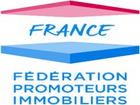
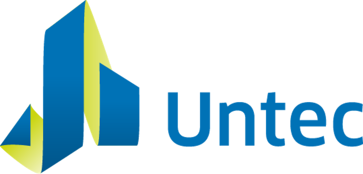
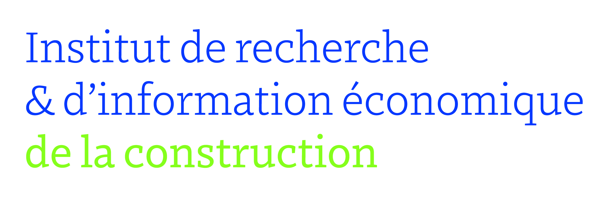

Adhérents /Untec/ Iriec




L’IRIEC (Institut de Recherche et d’Information en Économie de la Construction) est une structure associative de loi 1901. Elle est organisée en trois instances : bureau exécutif, conseil d’administration et OPCC (Observatoire Permanent des Coûts de la Construction), dont elle soutient et assure le rayonnement institutionnel.
Une structure basée sur la complémentarité
Dans un souci de qualité des travaux menés par l’OPCC, l’IRIEC s’appuie sur 3 acteurs. L’Untec d’abord qui, grâce notamment à son réseau d’adhérents, procure expertise et méthodologie en matière de connaissance des coûts de la construction. Untec Services ensuite, pour son soutien logistique en matière de collecte de données, production d’indicateurs, d’études et de communication.
L’USH enfin (Union Social pour l’Habitat), qui apporte une contribution essentielle dans la remontée de données pertinentes dans son domaine, ainsi que dans la définition des orientations stratégiques de l’institut. La structure même de l’Observatoire s’appuie sur la complémentarité de ces 3 acteurs fondateurs qui lui apportent représentativité, finesse des analyses stratégiques, compétences en management et communication, méthode, rigueur et expertise. Un fonctionnement dûment organisé qui permet en outre une grande réactivité dans les réponses, couplée à une véritable connaissance du terrain partout en France. L’approche dans son ensemble est basée sur une nomenclature de coûts compatible à l’international, ce qui rend possible le rayonnement des travaux hors de nos frontières.
L’IRIEC a pour objectif d’accompagner les acteurs de la construction dans la constatation, l’analyse et la projection des coûts de la construction, au regard d’un contexte évolutif, notamment en matière de réglementation, de technologies et de pratiques du secteur du bâtiment.Pour ce faire, l’Observatoire mène conjointement deux types d’activités :
Ces dernières sont rendues possibles grâce au vivier d’économistes de la construction adhérents référencés par Untec Services. Quant aux commanditaires, ils sont de différentes natures : membres de l’IRIEC, associations, fédérations, syndicats, personnes publiques, etc.
Lorsqu’elle arrive, la commande enregistrée à l’IRIEC suit, selon sa nature, une procédure stricte :
- Pour les demandes aboutissant à des indicateurs, le processus est simplifié car les données statistiques existent déjà grâce à un système d'alimentation continu.
Il suffit de les sélectionner, de les formater et de les analyser
- Les commandes ponctuelles font préalablement l’objet d’une consultation des économistes référencés après élaboration d’un dossier à leur égard, puis d’une attribution du projet d’étude, avant de passer à sa production.
Une fois produite et validée, cette étude ad-hoc détaillée est remise à son commanditaire tandis qu’une synthèse est publiée sur le site de l’OPCC. S’il s’agit d’un indicateur, il est également mis à disposition sur le site de l’Observatoire et vient nourrir la base de données de l’IRIEC.